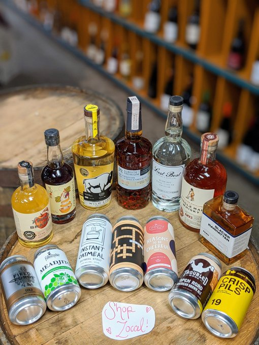
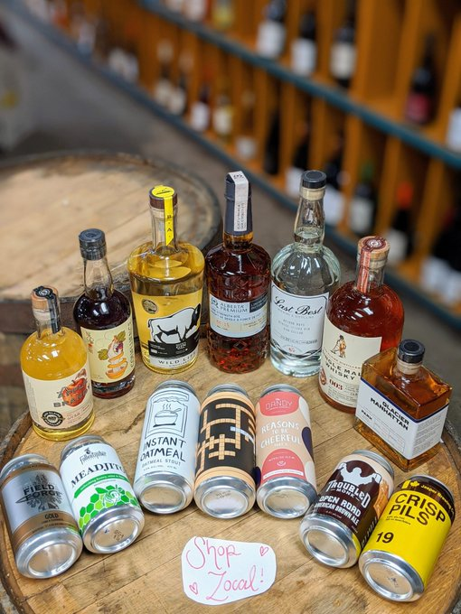

More information
Hours. Snacks. Tours.
Please note: Due to AGLC regulations, we are not able to fill growlers or provide offsales at this time.
Restaurant
Offering a full lunch, dinner and brunch menu, the Tasting Room brings a unique drinking menu to the craft beer experience. With snacks, plates, desserts, and a fresh oyster bar, the menu is meant to be shared among friends and lovers. Always evolving, the menu is perfectly paired with all things Dandy. Vegetarian and Vegan options available. Please ask your server. Open for Lunch, Dinner, and Brunch.Tasting Room Hours
Monday: Closed
Tuesday: 11:30am-10pm
Wednesday 11:30-10pm
Thursday 11:30-10pm
Friday 11:30-Midnight
Saturday 10am-Midnight
Sunday 10am-8pm